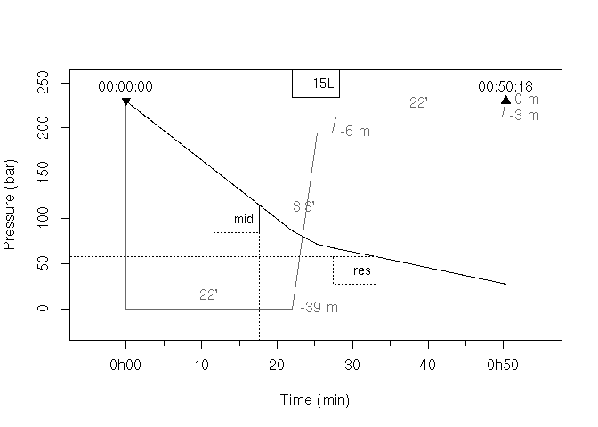

R package for dive planification tools. It contains functions and methods to represent dive curves, desaturation time and gas consumption.
At this day, only mn90 tables models are coded for single, consecutive or successive dives. This mean all profile are square ones and only maximum depth and dive time are used to compute desaturation.
Future parts are work in progress, like more precise planification setup with different depths and time input. Desaturation planification with other models are also planned along with maybe other gas than air supported for consumption.
Intended to be used by french dive student, traduction of the lexic is on it’s way. Feel free to participate to this project, it is designed to be open source under a CECILL-2 Licence. Any help in traduction or documentation is welcome (see end of README).
Installation
Dependencies
This package relies on very few packages listed below, that you can install with the following code.
for (i in c('graphics', 'stats', 'viridisLite') ){
if(!require(i,character.only = TRUE))
install.packages(i)
}Development version
You can install the development version of {DiveR} from github with:
# install.packages("devtools")
devtools::install_github('https://github.com/gowachin/DiveR')
# or
# install.packages("remotes")
remotes::install_github("gowachin/DiveR")This is a simple example where we simulate a dive. This show also the desaturation stops due in the table model.
# Simulation of a dive
library(DiveR)
dive <- dive(depth = 39, time = 22, secu = TRUE,
ascent_speed = 10, desat_model = "table")
summary(dive)
#> --------------------------------------------------
#> Maximum depth : 39 m | Depth dive time : 22 min
#> Dive ascent : 28 min | Underwater time : 50 min
#> Majoration : 0 min | Security stop : TRUE
#> Start : 00:00:00 | End : 00:50:18
#> --------------------------------------------------
#>
#> |- Desaturation -|
#> ---------------------------------
#> Stop | Depth | Duration | Time
#> ---------------------------------
#> n 2 | 6 m | 2 min | 25 min
#> ---------------------------------
#> n 3 | 3 m | 22 min | 28 min
#> ---------------------------------
#> Group : J | Model : tableFrom the precedent dive you can check if you can survive with certain tank pressure.
tank <- tank(vol = 15, press = 230, name = "15L")
conso <- conso(dive = dive, tank = tank, cons = 20)
summary(conso)
#> Consumption simulated on dive at 39 m for 50.3 minutes
#> ---------------------------------------------------------------------
#> Tank name | Rule | Pressure | Time | Final pressure
#> ---------------------------------------------------------------------
#> Tank 15L | mid | 115 bar | 18 min | 27.83 bar
#> | res | 58 bar | 33 min |
#> | AF | 0 bar | NA min |
#> ---------------------------------------------------------------------
#> The dive is viable !
plot(conso, line_print = FALSE)
Documentation
For further information, check the vignettes describing above examples in more depth.
Dive planification
Read Dive planification Vignette to learn how to simulate dives under table desaturation model.
Gas Consumption
Read Gas Consumption Vignette to learn how to simulate the use of gas during a dive.
Disclaimer
This application is intended for use in education about scubadiving planification and academic interest only. It is not designed for actual use in scuba diving and underwater activity. It is emphatically not suitable for use in actual diving. Scuba diving is a dangerous activity with risks of death and serious injury. No-one should attempt scuba diving without training, certification, supervision and regular medical assessment. It is also dangerous for trained scuba divers to exceed the limitations of their training.
This application will provide planification about dive profile and air consumption, without giving any warning if the activity would be dangerous or fatal. In doing so, it does not take account of safety restrictions, other physical laws, or other important information. Despite using diving table as base for computation, no output from this application should be misconstrued as a diving table. The author does not warrant that the application is correct in any sense whatsoever. Even if correctly computed, the predictions of a theoretical physical model may not be correct predictions.
Note here that all dives simulated will also being at sea level.
Want to help ?
Go check the projects of this repository ! Any help is welcome and I accept all sort of ideas for future project. The idea of this package is to learn about process like desaturation models and turn them into algorithms. If you want to use a specific model, join me and we can try to implement it !
Feel free to fork this, and use it. Any recommendation is welcome :)